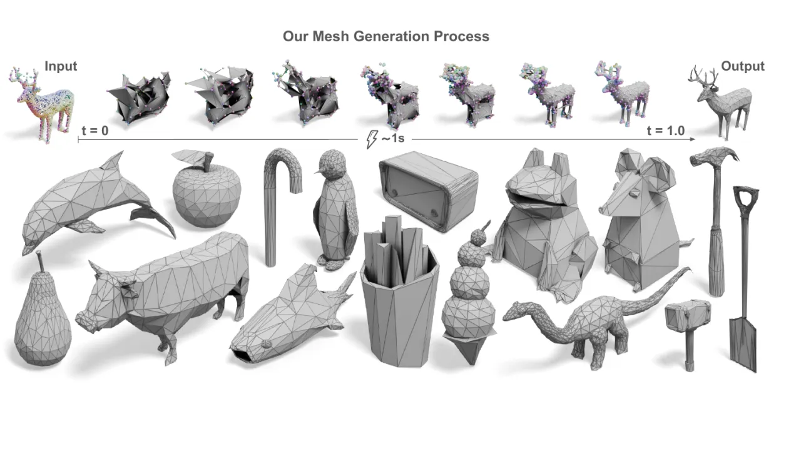
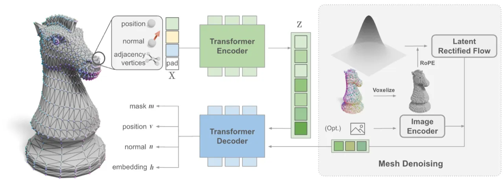
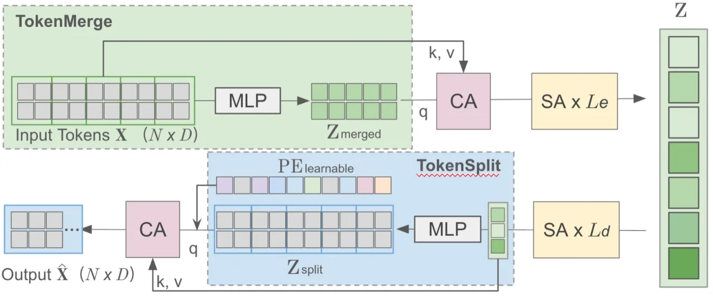
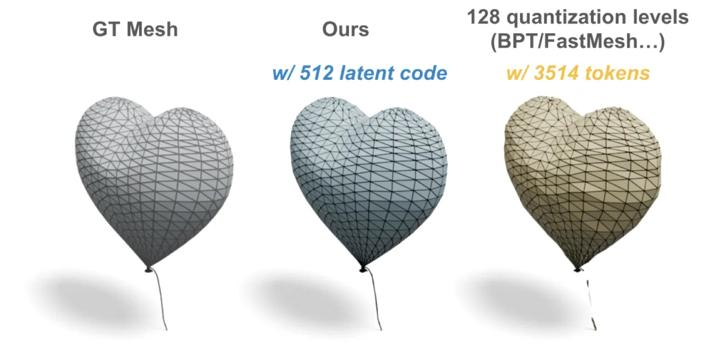
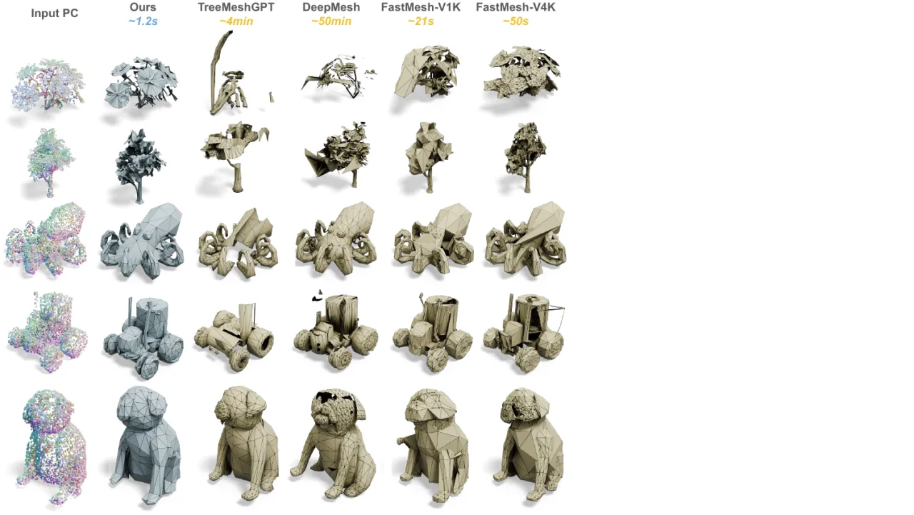
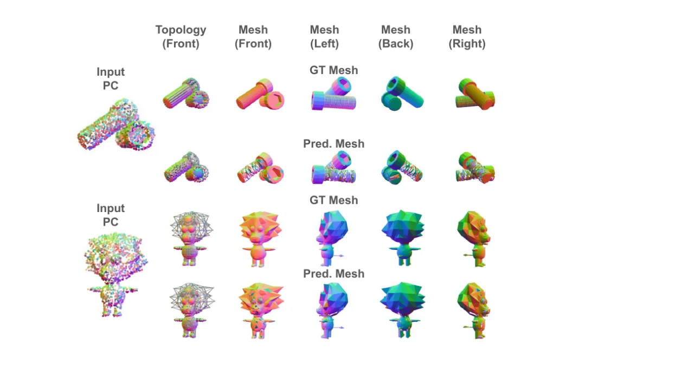

MeshFlow 提出了一套新的 3D 网格生成框架：用 MeshVAE 将顶点位置、法线与拓扑关系压缩进紧凑的连续隐空间，再用 Rectified Flow Diffusion Transformer (DiT) 并行去噪所有 latent token，最终解码出显式的顶点与边，得到适合下游 3D 工作流的 artist-like 网格。整套流程彻底绕开了自回归（AR）方法的逐 token 预测，推理时间约 1.2 秒，比最快的 AR 方法快 18×。
现有的 artist-like 网格生成方法大多采用 Auto-Regressive (AR) next-token prediction。AR 方法在两个维度上存在根本性瓶颈：推理开销随网格规模呈二次方增长，且必须对顶点坐标做离散化量化，引入不可避免的量化误差。MeshFlow 从这两个根本问题出发，提出了一套连续隐空间 + 并行生成的替代方案。
"Current mesh generators often adopt Auto-Regressive (AR) next-token prediction, a natural choice given the discrete nature of mesh topology. However, AR methods scale poorly because the inference cost is quadratic in mesh size. They also require discretizing the vertex coordinates, which introduces quantization errors."

与 AR 方法相比，MeshFlow 的核心优势体现在三点：
MeshFlow 由两个核心模块串联而成：MeshVAE（将离散网格压缩为连续隐向量）和 Flow-based Diffusion Transformer（在隐空间并行去噪生成）。

一个三角网格 M 可以表示为顶点集 V = (v₁, …, vₙ) 和面集 F。MeshFlow 不直接对面进行编码，而是对边（edges）编码。若排除三角边环退化情形，面 F 可由边集 E 完整恢复。核心创新在于：借鉴 SpaceMesh 的思路，用每个顶点的连续 edge embedding eᵢ ∈ ℝᴰ 来隐式表达 adjacency：两顶点间距离 d(eᵢ, eⱼ) ≤ τ 则判定存在边。此外，每个顶点还携带一个 outward normal nᵢ 用以恢复面的方向。因此，整个网格被表示为三元组 (v, n, e)，全部为连续量，彻底避免了面 token 的离散化。
顶点比面更紧凑：网格通常拥有 2–3 倍于顶点数的面，因此顶点级别的表示天然比面级别的 tokenizer 更短，压缩比显著更优。
MeshVAE 的目标是将网格的三元组 (v, n, A) 压缩至低维连续隐向量 z，再从 z 解码出 (v̂, n̂, ê, m̂)。


生成阶段采用 Rectified Flow (RF)，其直线 ODE 公式避免了路径交叉、最小化时间步离散误差。模型训练目标为 Conditional Flow Matching (CFM)：
"v_θ(RoPE3D(x_t, c_vox), t) → (ε − x₀)"
条件生成中，输入点云先做体素化，再通过 3D RoPE 位置编码与噪声 latent 融合，同时将顶点数量拼入时间 embedding 作为全局条件。DiT 采用 18 个 Transformer block、1024 维隐层，共 427M 参数；MeshVAE 的 encoder/decoder 各 8 层、1024 维，共 233M 参数。推理时还采用 Flash Attention + BF16 混合精度加速，并使用 EMA 提升稳定性与泛化。
训练末期引入 logit-normal timestep 采样（借鉴 SD3），推理时采用 timestep shifting 3.0，促使模型在生成阶段更关注精细几何细节。
对于生成结果的后处理：检测 boundary edge（仅属于一个三角面的边），若 k < 5 的边环则自动三角化修补，增强生成结果的鲁棒性。
评估在 Toys4K 数据集（所有对比模型均未在此训练，保证公平泛化测试）上进行，使用 Chamfer Distance (CD) 和 Hausdorff Distance (HD)（均乘以 100 缩放），以及推理时间。
| 方法 | CD ↓ (×100) | HD ↓ (×100) | Inf. Time (s) ↓ | #V |
|---|---|---|---|---|
| MeshAnything | 12.02 | 26.87 | 26.06 | 218.6 |
| MeshAnythingV2 | 10.23 | 24.98 | 31.94 | 533.3 |
| TreeMeshGPT | 5.46 | 13.96 | 27.32 | 706.3 |
| BPT | 5.71 | 12.02 | 49.23 | 525.5 |
| FastMesh-V1K | 4.09 | 10.32 | 3.41 | 467.2 |
| FastMesh-V4K | 4.05 | 10.22 | 6.60 | 1040.6 |
| MeshFlow (Ours) | 2.33 | 4.23 | 1.06 + 0.47 | 459.75 |
注：Inf. Time 参照 FastMesh 的计算方式（多个对象的平均推理时间）。AR 方法在处理单个对象时往往需要约 6× 的报告时间，而 MeshFlow 保持恒定运行时间。*所有 baseline 数值引自 FastMesh 论文。
| 方法 | BPT | TreeMeshGPT | DeepMesh | FastMesh-V1K | FastMesh-V4K | MeshFlow (Ours) |
|---|---|---|---|---|---|---|
| 推理时间 | ~8 min | ~4 min | ~50 min | ~21 s | ~50 s | ~1.2 s |
| 类型 | 方法 | CD ↓ (×100) | Compression Ratio ↓ |
|---|---|---|---|
| AR | TreeMeshGPT | 1.63 | 0.22 |
| ArAE | EdgeRunner | 1.21 | 0.47 |
| Diffusion | MeshVAE (Ours) | 1.29 | 0.014 |
MeshVAE 的 CD 接近最优（1.29 vs 1.21），而 Compression Ratio 达到 0.014，远低于 AR 方法的 0.22–0.47，证明其表示极其紧凑。

以下表格对比了 MeshVAE 不同下采样策略对重建质量的影响（所有数值乘以 100）：
| 方法 | Vert. Dist. ↓ | Normals Dist. ↓ | F1 Score ↑ |
|---|---|---|---|
| Q-Former | 23.36 | 18.77 | 49.47 |
| FPS | 18.29 | 14.61 | 60.18 |
| TokenMerge (Ours) | 0.75 | 0.47 | 99.78 |
| 不同下采样倍率（TokenMerge）： | |||
| downsample ×4 | 1.25 | 1.30 | 88.82 |
| downsample ×2 | 0.97 | 1.11 | 92.65 |
TokenMerge 是确保训练收敛和高保真重建的关键。即使 4× 下采样，F1 仍达 88.82%，说明方法具有良好的压缩鲁棒性。
Normal Consistency (NC) 指标说明：由于 MeshFlow 直接预测法线，NC 指标对其异常偏高，并不具有真实比较意义，故论文未报告此指标。作者指出 CD/HD 也不能完整反映网格拓扑质量，呼吁未来工作开发更全面的网格质量评测指标。
当前方法假设所有面均为三角形。然而，专业美术师在制作时往往偏好 quad（四边形）等多边形，三角面的限制可能使生成结果与实际工作流有所脱节。
由于 diffusion 预测的不精确，生成的网格中偶尔出现小洞（holes）。论文采用基于短环检测（short-cycle detection）的启发式后处理进行修补。精化 diffusion 过程或使用更强的 DiT 模型可能有助于缓解此问题。

"Common metrics such as CD and HD struggle to effectively evaluate artifacts in the generated meshes, including flipped normals and holes." 未来工作应聚焦于开发能评估网格拓扑质量的指标，但这在生成任务中仍具挑战性。
模型仅生成几何（顶点 + 连通性），未考虑 UV mapping 或材质纹理。作者指出，扩展至 UV mapping 生成以支持高质量纹理，是一个值得探索的未来方向。